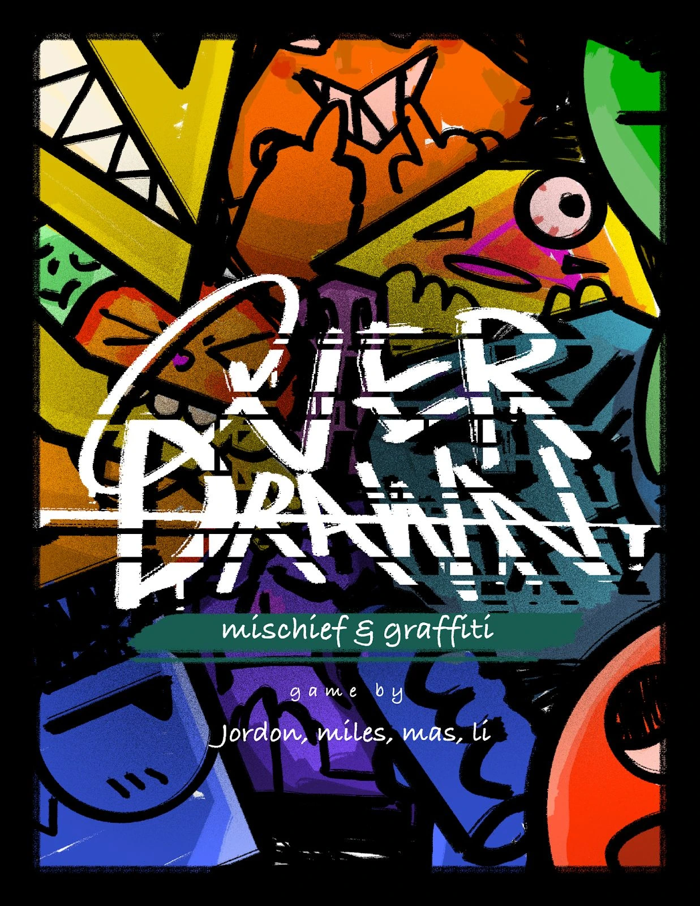

Overdrawn.
Game Designer · Director
Type
Board game
Team
4 people
Timeline
December 2025
A board game where graffiti artists compete for territory and infamy through graffiti battles.

Board & components
Next projectPic Peck
Game Designer · Director
Board game
4 people
December 2025
A board game where graffiti artists compete for territory and infamy through graffiti battles.
